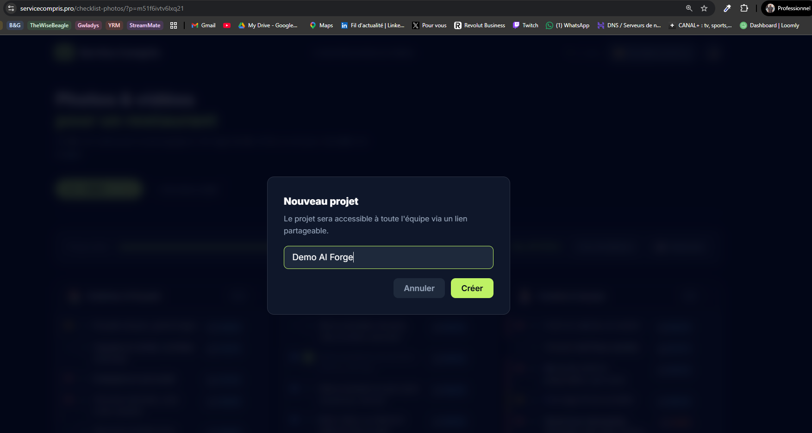
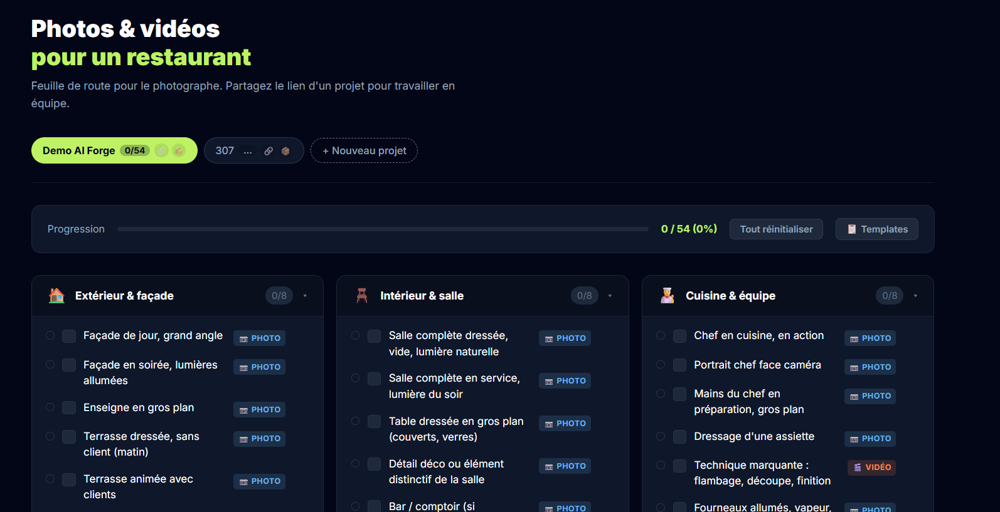
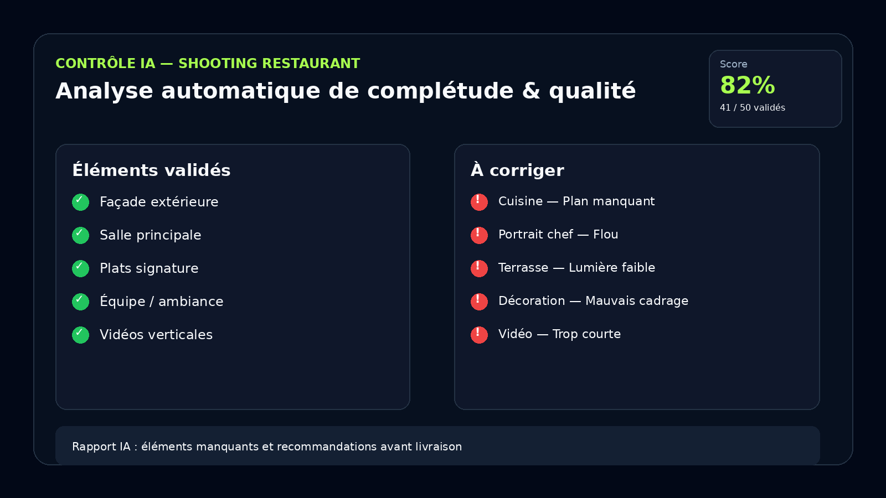

3 jours pour transformer l’IA en système de performance.
Vous ne venez pas apprendre à écrire de meilleurs prompts. Vous venez construire des assistants métier, des agents et des workflows capables de vous faire gagner du temps, de l’argent et de la marge mentale.
6 participants maximum • 5 000 € net • InterContinental Lyon — Hôtel Dieu
6
places seulement
Parce qu’on travaille réellement sur les cas des participants.
3 jours
en immersion physique
Un format intensif, pensé pour construire et déployer.
1 système
adapté à votre métier
Pas un exercice générique. Une architecture liée à vos contraintes.
Pourquoi 90% des formations IA sont un gâchis de trésorerie.
La plupart des professionnels utilisent encore l’IA comme un assistant ponctuel : une question, une réponse, un prompt, un copier-coller. C’est mieux que rien. Mais ce n’est pas une transformation.
Beaucoup ont déjà dépensé plusieurs milliers d’euros pour se retrouver à écouter quelqu’un lire des slides sur “comment faire de meilleurs prompts”. Des concepts génériques, aucune application métier, et surtout : zéro retour sur investissement tangible.
Ce n’est pas la faute des formateurs. C’est la faute du système.
- L’illusion administrative : les programmes figés vieillissent plus vite que l’IA elle-même.
- Le syndrome du spectateur : écouter quelqu’un parler d’IA ne vous fera ni gagner du temps, ni gagner de l’argent.
AI FORGE sort volontairement de cette logique : pas de cases à cocher, pas de théorie décorative. Trois jours d’ingénierie stratégique en huis clos pour forger des actifs numériques qui travaillent pour vous dès le retour au bureau.
Un outil métier vaut mieux que 50 prompts.
Premier client restaurant. Shooting photo. Au moment de produire le site, des éléments manquent : certaines photos, certaines vidéos, certains plans utiles. Le problème n’était pas le photographe. Le problème, c’était l’absence de système.
Transformer l’oubli terrain en protocole exploitable.
Nous avons construit un outil interne : chaque nouveau restaurant devient un projet, avec une checklist dédiée, des contenus attendus, un suivi de complétion et une logique de contrôle de production.
- ✦ création d’un projet client en quelques secondes
- ✦ checklist structurée pour le photographe / vidéaste
- ✦ suivi terrain, statut et validation par item
- ✦ base prête à être enrichie par un contrôle IA

Création d’un projet client — outil interne de structuration de production.

Dashboard checklist — chaque élément attendu est tracé, suivi et validé.
La vraie valeur de l’IA : sécuriser l’exécution.
L’objectif n’est pas de “faire de l’IA”. L’objectif est de réduire les oublis, fiabiliser la livraison, protéger la marge et rendre le travail terrain mesurable.
C’est exactement la logique AI FORGE : identifier un goulot d’étranglement, le transformer en système, puis l’intégrer à votre quotidien professionnel.

Projection fonctionnelle — contrôle IA de la complétude et de la qualité des fichiers avant production.
De l’audit au déploiement.
Vous n’arrivez pas le premier jour pour chercher des idées. Vous arrivez pour construire, avec un diagnostic déjà posé et une direction claire.
Phase préparatoire • J-15 à Jour J
On isole le processus le plus rentable à automatiser avant même votre arrivée.
J-15 : questionnaire pointu pour isoler vos tâches chronophages, contraintes et goulots d’étranglement.
J-10 : interview individuelle de cadrage avec les formateurs.
Avant session : préparation du moule et de l’architecture de travail.
Jour 1 • Fondations
Créer votre cerveau IA métier.
Stratégie pure, paramétrage des modèles, confidentialité, base de connaissances privée et injection de vos règles métier.
Jour 2 • Mécanique
Donner des bras à votre IA.
Automatisation logicielle, connexion de vos outils, Make/Zapier, bac à sable sécurisé et orchestration des flux.
Jour 3 • Production
Tester, sécuriser, déployer.
Épreuve du feu, tests de robustesse, documentation des blueprints et transfert de compétences pour votre retour.
L’IA ne vaut rien si elle ne récupère pas du temps.
Nous ne vendons pas de la culture générale. Nous construisons des actifs numériques orientés gain de temps, productivité, acquisition, contrôle qualité ou pilotage.
Machine à prospection
Un agent IA identifie des prospects ciblés, enrichit leurs coordonnées et prépare leur intégration CRM.
Un pipeline qui se nourrit sans assistant dédié.
Support commercial dynamique
Un système génère des supports ultra-personnalisés au client plutôt qu’un PDF statique.
Le temps de préparation d’un pitch passe de 2h à quelques minutes.
Contrôle qualité
Une IA vérifie la complétude, la qualité et les manques avant livraison ou mise en production.
Moins d’oublis, moins de reprise, plus de marge.
L’équation est simple.
Si le système que vous forgez vous fait économiser seulement 2 heures par jour de travail ingrat, cela représente environ 25% de votre temps récupéré. Pour un professionnel, c’est l’équivalent de 15 000 à 30 000 € de valeur annuelle réinjectée dans la stratégie, l’acquisition ou la qualité.
On ne forge pas dans l’inconfort.
Pendant trois jours à l’Hôtel-Dieu de Lyon, votre charge mentale doit être nulle. Une seule préoccupation : votre métier.
Stratégie métier + architecture technique.
Vous ne serez pas encadrés par des théoriciens, mais par deux opérateurs : un stratège business et un architecte système.

Romain Tixier
Stratégie, ROI, usage métier
Romain traduit vos goulots d’étranglement en cahier des charges concret. Sa mission : éviter les gadgets techniques et concentrer l’effort sur ce qui crée du temps, de la valeur ou de la marge.
“Une IA qui ne vous fait pas gagner de temps ou d’argent n’est qu’un centre de coûts décoratif.”

François-Thomas Fenaux
Architecture, workflows, systèmes
François-Thomas orchestre la mécanique : API, automatisations, bases de données, Make, outils no-code et workflows exploitables. Il rend la complexité technique opérationnelle.
“La technique pure doit s’effacer devant l’usage. Nous construisons des systèmes résilients, pas des usines à gaz.”
L’ADN Streammate AI
AI FORGE est l’ouverture exceptionnelle de notre laboratoire : les méthodes, systèmes et logiques que nous forgeons pour nos propres opérations sont transmises à un groupe restreint de décideurs capables de les exploiter immédiatement.
L’Après-Forge : la garantie d’implémentation.
Audit de consolidation à J+30
Nous ne vous laissons pas seul avec vos outils. 30 jours après l’immersion, nous réalisons une interview post-formation pour lever les points de friction et corriger ce qui coince dans votre quotidien.
Cercle privé des décideurs
Accès à un groupe d’entraide confidentiel réservé aux anciens participants, avec supervision ponctuelle des formateurs hors consulting quotidien.
Session du 16 au 18 juin
InterContinental Lyon — Hôtel Dieu. Trois jours en comité restreint pour construire un système IA adapté à vos contraintes métier.
Investissement
5 000 € net
Aucune remise. Aucun code. Format volontairement limité.
On échange 10 à 15 minutes. Si ce n’est pas pertinent, on vous le dira simplement.